CODING AGENTS AS PIXEL WORLD MODELS
traex/DeepSeek-V4.1-Flash · 0098
点击播放 · 原生 RGB 像素
逐轮保存的候选
回放视频、检查图与代码变化。
每份候选均可单独播放。实际图片检查记录在下方工具轨迹中。
候选 01播放与检查图
点击播放 · 原生 RGB 像素
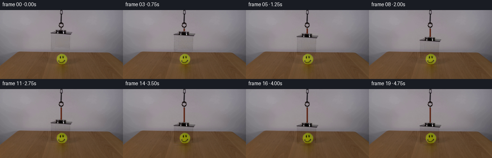
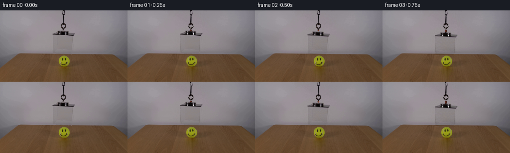
展开代码变化
--- 上一保存版本
+++ 本次保存版本
@@ -0,0 +1,156 @@
+from pathlib import Path
+
+import cv2
+import numpy as np
+from PIL import Image
+
+import artifact_io
+
+
+CASE_DIR = Path(__file__).resolve().parent
+WIDTH, HEIGHT = 256, 144
+FRAME_COUNT = 20
+
+
+def smoothstep(value):
+ value = np.clip(value, 0.0, 1.0)
+ return value * value * (3.0 - 2.0 * value)
+
+
+def make_clean_plate(source):
+ """Remove the suspended assembly while retaining the ball and table."""
+ clean = source.astype(np.float32).copy()
+
+ def fill_span(y0, y1, x0, x1):
+ for y in range(y0, y1):
+ left = np.median(source[y, max(0, x0 - 4):x0], axis=0)
+ right = np.median(source[y, x1:min(WIDTH, x1 + 4)], axis=0)
+ xs = np.arange(x0, x1, dtype=np.float32)
+ t = (xs - x0 + 0.5) / max(1, x1 - x0)
+ t = smoothstep(t)
+ clean[y, x0:x1] = left[None, :] * (1.0 - t[:, None]) + right[None, :] * t[:, None]
+
+ # Hook cord, lid, and the nearly transparent acrylic front.
+ fill_span(0, 29, 119, 136)
+ fill_span(29, 39, 121, 134)
+ fill_span(39, 52, 100, 153)
+ fill_span(52, 87, 105, 147)
+
+ # The original frame has a small amount of assembly spill on the table lip.
+ for y in range(87, 91):
+ left = np.median(source[y, 96:103], axis=0)
+ right = np.median(source[y, 148:155], axis=0)
+ xs = np.arange(103, 148, dtype=np.float32)
+ t = smoothstep((xs - 103 + 0.5) / 45.0)
+ repaired = left[None, :] * (1.0 - t[:, None]) + right[None, :] * t[:, None]
+ weight = np.clip(1.0 - (y - 87) / 4.0, 0.0, 1.0)
+ clean[y, 103:148] = repaired * weight + clean[y, 103:148] * (1.0 - weight)
+
+ # Match the fine wall grain without introducing visible patch borders.
+ rng = np.random.default_rng(98)
+ grain = cv2.GaussianBlur(rng.normal(0.0, 1.25, (HEIGHT, WIDTH)).astype(np.float32), (0, 0), 0.55)
+ wall_weight = np.zeros((HEIGHT, WIDTH, 1), dtype=np.float32)
+ wall_weight[:87, 100:153] = 1.0
+ wall_weight = cv2.GaussianBlur(wall_weight, (0, 0), 1.1)
+ clean[:87] += grain[:87, :, None] * wall_weight[:87, :, None]
+ return np.clip(clean, 0, 255)
+
+
+def soft_region_mask():
+ mask = np.zeros((HEIGHT, WIDTH), dtype=np.float32)
+ mask[38:52, 101:152] = 1.0
+ mask[50:88, 104:148] = 1.0
+ mask = cv2.GaussianBlur(mask, (0, 0), 0.52)
+ return mask
+
+
+def fixed_hook_layer(source, clean):
+ residual = source - clean
+ mask = np.zeros((HEIGHT, WIDTH), dtype=np.float32)
+ mask[0:40, 117:139] = 1.0
+ mask = cv2.GaussianBlur(mask, (0, 0), 0.45)
+ return residual, mask
+
+
+def draw_cord(frame, top, bottom):
+ if bottom <= top + 0.5:
+ return
+ x = 127.0
+ p0 = (int(round(x)), int(round(top)))
+ p1 = (int(round(x)), int(round(bottom)))
+ cv2.line(frame, (p0[0] + 1, p0[1]), (p1[0] + 1, p1[1]), (66, 31, 25), 1, cv2.LINE_AA)
+ cv2.line(frame, p0, p1, (121, 55, 32), 1, cv2.LINE_AA)
+ cv2.line(frame, (p0[0] - 1, p0[1]), (p1[0] - 1, p1[1]), (91, 42, 29), 1, cv2.LINE_AA)
+
+
+def add_contact_shadow(frame, amount):
+ if amount <= 0:
+ return
+ overlay = np.zeros_like(frame, dtype=np.float32)
+ yy, xx = np.mgrid[0:HEIGHT, 0:WIDTH]
+ ellipse = ((xx - 126.0) / 24.0) ** 2 + ((yy - 116.0) / 3.8) ** 2
+ shadow = np.clip(1.0 - ellipse, 0.0, 1.0) ** 1.7
+ shadow *= amount
+ overlay[:] = (38.0, 29.0, 25.0)
+ frame[:] = frame * (1.0 - shadow[:, :, None] * 0.26) + overlay * (shadow[:, :, None] * 0.26)
+
+
+def box_offset(frame_index):
+ if frame_index == 0:
+ return 0.0
+ # The assembly starts gently, then settles onto the table and holds.
+ u = (frame_index - 1.0) / 13.5
+ eased = 0.58 * u + 0.42 * smoothstep(u)
+ offset = 29.0 * np.clip(eased, 0.0, 1.0)
+ if frame_index >= 16:
+ offset = 29.0
+ return float(offset)
+
+
+def shift_layer(layer, dx, dy):
+ matrix = np.float32([[1.0, 0.0, dx], [0.0, 1.0, dy]])
+ return cv2.warpAffine(layer, matrix, (WIDTH, HEIGHT), flags=cv2.INTER_LINEAR, borderMode=cv2.BORDER_REFLECT)
+
+
+def generate_frames():
+ first = np.asarray(Image.open(CASE_DIR / "first_frame.png").convert("RGB"), dtype=np.uint8)
+ source = first.astype(np.float32)
+ clean = make_clean_plate(source)
+ residual, hook_mask = fixed_hook_layer(source, clean)
+ box_mask = soft_region_mask()
+ box_layer = residual * box_mask[:, :, None]
+ hook_layer = residual * hook_mask[:, :, None]
+
+ frames = []
+ for index in range(FRAME_COUNT):
+ if index == 0:
+ frames.append(first.copy())
+ continue
+
+ offset = box_offset(index)
+ frame = clean.copy()
+ frame += hook_layer
+
+ moving = shift_layer(box_layer, 0.0, offset)
+ frame += moving
+
+ # The chain ends just above the original lid. Extend the warm cord down
+ # to the moving lid as the box descends.
+ draw_cord(frame, 39.0, 40.0 + offset)
+
+ approach = smoothstep((offset - 19.0) / 10.0)
+ add_contact_shadow(frame, approach)
+
+ # A restrained final vibration makes the contact read as physical while
+ # preserving the locked-off camera and rigid acrylic body.
+ if index in (15, 16):
+ frame = shift_layer(frame, 0.0, -0.35 if index == 15 else 0.12)
+
+ frame = np.clip(frame, 0, 255).astype(np.uint8)
+ frames.append(frame)
+
+ return np.stack(frames)
+
+
+if __name__ == "__main__":
+ artifact_io.save(generate_frames(), CASE_DIR)
候选 02播放与检查图
点击播放 · 原生 RGB 像素

展开代码变化
--- 上一保存版本
+++ 本次保存版本
@@ -56,12 +56,10 @@
return np.clip(clean, 0, 255)
-def soft_region_mask():
+def soft_region_mask(y0, y1, x0, x1):
mask = np.zeros((HEIGHT, WIDTH), dtype=np.float32)
- mask[38:52, 101:152] = 1.0
- mask[50:88, 104:148] = 1.0
- mask = cv2.GaussianBlur(mask, (0, 0), 0.52)
- return mask
+ mask[y0:y1, x0:x1] = 1.0
+ return cv2.GaussianBlur(mask, (0, 0), 0.52)
def fixed_hook_layer(source, clean):
@@ -117,8 +115,12 @@
source = first.astype(np.float32)
clean = make_clean_plate(source)
residual, hook_mask = fixed_hook_layer(source, clean)
- box_mask = soft_region_mask()
- box_layer = residual * box_mask[:, :, None]
+ lid_mask = soft_region_mask(38, 52, 101, 152)
+ wall_mask = soft_region_mask(50, 88, 104, 148)
+ table_mask = soft_region_mask(86, 116, 104, 148)
+ wall_residual = residual * wall_mask[:, :, None]
+ table_residual = residual * table_mask[:, :, None]
+ lid_residual = residual * lid_mask[:, :, None]
hook_layer = residual * hook_mask[:, :, None]
frames = []
@@ -131,8 +133,12 @@
frame = clean.copy()
frame += hook_layer
- moving = shift_layer(box_layer, 0.0, offset)
- frame += moving
+ frame += shift_layer(lid_residual, 0.0, offset)
+ frame += shift_layer(wall_residual, 0.0, offset)
+ # The original acrylic only had a short overlap with the table. Do not
+ # transfer that wall shading over the table after the panel lands.
+ table_weight = np.clip(1.0 - (offset - 10.0) / 12.0, 0.0, 1.0)
+ frame += shift_layer(table_residual, 0.0, offset) * table_weight
# The chain ends just above the original lid. Extend the warm cord down
# to the moving lid as the box descends.
@@ -140,11 +146,6 @@
approach = smoothstep((offset - 19.0) / 10.0)
add_contact_shadow(frame, approach)
-
- # A restrained final vibration makes the contact read as physical while
- # preserving the locked-off camera and rigid acrylic body.
- if index in (15, 16):
- frame = shift_layer(frame, 0.0, -0.35 if index == 15 else 0.12)
frame = np.clip(frame, 0, 255).astype(np.uint8)
frames.append(frame)
候选 03播放与检查图
候选 04播放与检查图
点击播放 · 原生 RGB 像素
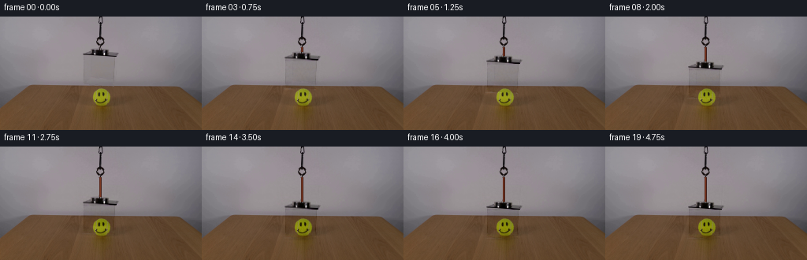
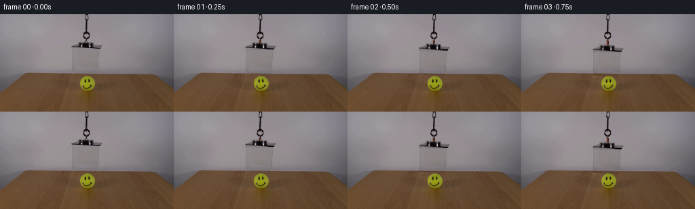
展开代码变化
--- 上一保存版本
+++ 本次保存版本
@@ -97,7 +97,7 @@
if frame_index == 0:
return 0.0
# The assembly starts gently, then settles onto the table and holds.
- u = (frame_index - 1.0) / 13.5
+ u = (frame_index - 0.35) / 14.0
eased = 0.58 * u + 0.42 * smoothstep(u)
offset = 29.0 * np.clip(eased, 0.0, 1.0)
if frame_index >= 16:
可观测工具轨迹
实际执行的命令与返回图片。
命令 1exit 0
/bin/bash -c "pwd && rg --files -g 'prompt.txt' -g 'GENERATION_RULES.md' -g '*.py' -g '*.md' -g '*.png' | sed -n '1,160p'"
命令 2exit 0
/bin/bash -c "printf '%s\\n' '--- prompt.txt ---'; sed -n '1,240p' prompt.txt; printf '%s\\n' '--- GENERATION_RULES.md ---'; sed -n '1,320p' GENERATION_RULES.md"
命令 3exit 0
/bin/bash -c "find . -maxdepth 2 -type f -printf '%p %s bytes\\n' | sort | sed -n '1,200p'; printf '%s\\n' '--- tools ---'; command -v ffmpeg; command -v python3; python3 - <<'PY'
try:
import cv2; print('cv2', cv2.__version__)
except Exception as e: print('no cv2',e)
try:
import numpy; print('numpy',numpy.__version__)
except Exception as e: print('no numpy',e)
try:
import PIL; print('PIL',PIL.__version__)
except Exception as e: print('no PIL',e)
PY"命令 4exit 0
/bin/bash -c "sed -n '1,260p' artifact_io.py"
命令 5exit 0
/bin/bash -c "sed -n '1,260p' player_template.html"
命令 6exit 0
/bin/bash -c "python3 - <<'PY'
from PIL import Image
import numpy as np
im=np.array(Image.open('first_frame.png').convert('RGB'))
print(im.shape, im.dtype)
# selected scans
for y in [0,10,20,35,45,55,65,80,90,100,110,120,130,140,143]:
row=im[y]
print(y, 'minmax',row.min(0),row.max(0),'mean',row.mean(0).round(1))
PY"命令 7exit 0
/bin/bash -c "python3 - <<'PY'
from PIL import Image
im=Image.open('first_frame.png').convert('RGB')
im.crop((80,0,175,135)).resize((570,810), Image.Resampling.NEAREST).save('.tmp/box_crop.png')
PY"命令 8exit 0
/bin/bash -c "python3 - <<'PY'
from PIL import Image
im=Image.open('first_frame.png').convert('RGB')
im.crop((110,55,147,110)).resize((370,550), Image.Resampling.NEAREST).save('.tmp/ball_crop.png')
PY"命令 9exit 0
/bin/bash -c "python3 - <<'PY'
from PIL import Image
im=Image.open('first_frame.png').convert('RGB')
im.crop((94,36,159,91)).resize((650,550), Image.Resampling.NEAREST).save('.tmp/boxfront_crop.png')
PY"命令 10exit 0
/bin/bash -c "python3 - <<'PY'
from PIL import Image
import numpy as np
im=np.array(Image.open('first_frame.png').convert('RGB')).astype(float)
# sample wall expected as median across nearby side strips per row
for y in range(30, 121, 2):
bg=np.median(np.r_[im[y,60:90], im[y,180:220]],axis=0)
# max deviation x 95:165
dev=np.max(np.abs(im[y,90:175]-bg),axis=1)
xs=np.flatnonzero(dev>8)+90
if len(xs):
print(f'y={y:3d} bg={bg.round().astype(int)} dark={xs[0]}-{xs[-1]} peak={dev.max():.0f} @ {90+dev.argmax()}')
PY"命令 11exit 0
/bin/bash -c "python3 - <<'PY'
from PIL import Image
import numpy as np
im=np.array(Image.open('first_frame.png').convert('RGB')).astype(float)
# box back bottom edge inferred from weak horizontal line by gradients
for y in range(45,88):
# x 107:146, subtract a wall-only smooth approximation? print vertical derivative and row means
g=np.mean(np.abs(im[y,106:148]-im[y-1,106:148]))
print(y, round(g,2), im[y,107].round().astype(int), im[y,108].round().astype(int), im[y,145].round().astype(int), im[y,146].round().astype(int))
PY"命令 12exit 0
/bin/bash -c "python3 - <<'PY'
from PIL import Image
im=Image.open('first_frame.png').convert('RGB')
im.crop((90,38,165,91)).resize((900,636), Image.Resampling.NEAREST).save('.tmp/lid_crop.png')
PY"命令 13exit 0
/bin/bash -c "python3 - <<'PY'
from PIL import Image
im=Image.open('first_frame.png').convert('RGB')
im.crop((112,0,145,52)).resize((396,624), Image.Resampling.NEAREST).save('.tmp/cord_crop.png')
PY"命令 14exit 0
/bin/bash -c "python3 - <<'PY'
import cv2, numpy as np
from PIL import Image
im=cv2.imread('first_frame.png')
mask=np.zeros(im.shape[:2],np.uint8)
mask[34:89,103:153]=255
mask[0:47,118:136]=255
bg=cv2.inpaint(im,mask,5,cv2.INPAINT_TELEA)
cv2.imwrite('.tmp/clean_bg.png',bg)
d=np.abs(im.astype(float)-bg.astype(float)).max(2)
for box in [(35,51,103,153),(50,88,103,153),(0,35,118,136)]:
y0,y1,x0,x1=box; a=d[y0:y1,x0:x1]
print(box, 'pct', [(t,round((a>t).mean()*100,1)) for t in [1,2,3,5,10,20,40]], 'max',a.max())
PY"命令 15exit 0
/bin/bash -c "python3 - <<'PY'
import cv2, numpy as np
im=cv2.imread('first_frame.png').astype(float)
# print rows of green/cyan edges along box
for y in range(47,88):
vals=[]
for x in range(103,154):
b,g,r=im[y,x]
if g-r>5 or g-b>5 or b-r>5: vals.append(x)
if vals: print(y, min(vals),max(vals),len(vals))
PY"命令 16exit 0
/bin/bash -c "python3 - <<'PY'
from PIL import Image
import numpy as np
im=np.array(Image.open('first_frame.png').convert('RGB'))
for y in range(0,42):
xs=[]
for x in range(115,141):
r,g,b=im[y,x]
if max(r,g,b)<100 or (r>g+15 and g>b+5): xs.append(x)
if xs: print(y, min(xs), max(xs), im[y,126].tolist(), im[y,128].tolist())
PY"命令 17exit 0
/bin/bash -c "python3 - <<'PY'
from PIL import Image
import numpy as np
im=np.array(Image.open('first_frame.png').convert('RGB'))
for y in [50,51,52,55,60,65,70,75,80,84,86,87,88]:
print('y',y)
for x in list(range(102,113))+list(range(140,156)):
print(x, tuple(im[y,x]), end='; ')
print()
PY"命令 18exit 0
/bin/bash -c "python3 - <<'PY'
from PIL import Image
import numpy as np
im=np.array(Image.open('first_frame.png').convert('RGB')).astype(float)
for y in [53,57,61,65,69,73,77,81,85,86]:
print('y',y)
for x in range(100,158):
r,g,b=im[y,x]
# compare to median y around x=100 same row? just luma
if x==100 or x==157: continue
if abs((r+g+b)/3 - (im[y,x-1].sum()/3)) > 2:
print(x,tuple(im[y,x].astype(int)), end=' ')
print()
PY"命令 19exit 0
/bin/bash -c "python3 - <<'PY'
from PIL import Image
import numpy as np
im=np.array(Image.open('first_frame.png').convert('RGB')).astype(float)
# corner local coords box: lid plate x 101..157, y 41..52. crop to inspect enlarged maybe existing
# find best horizontal lines based mean gradient, x103:157
for y in range(38,92):
g=np.abs(im[y,103:157]-im[y-1,103:157]).mean()
if g>2: print(y,round(g,2))
PY"命令 20exit 0
/bin/bash -c "python3 - <<'PY'
from PIL import Image
import numpy as np
im=np.array(Image.open('first_frame.png').convert('RGB')).astype(int)
for y in range(87,100):
print('y',y, [(x,tuple(im[y,x])) for x in range(100,161,5)])
PY"命令 21exit 0
/bin/bash -c "python3 - <<'PY'
from PIL import Image
import numpy as np
im=np.array(Image.open('first_frame.png').convert('RGB'))
# list colors around lid plate
from collections import Counter
c=Counter(map(tuple, im[42:51,101:158].reshape(-1,3)))
for col,n in c.most_common(20): print(n,col)
PY"命令 22exit 0
/bin/bash -c "python3 - <<'PY'
from PIL import Image
import numpy as np
im=np.array(Image.open('first_frame.png').convert('RGB')).astype(int)
for y in range(40,53):
# range of dark pixels and metallic midtones
xs=[x for x in range(95,164) if im[y,x].mean()<110]
xm=[x for x in range(95,164) if 110<=im[y,x].mean()<135]
print(y, (min(xs),max(xs)) if xs else None, (min(xm),max(xm)) if xm else None)
PY"命令 23exit 0
/bin/bash -c "python3 - <<'PY'
from PIL import Image
import numpy as np
im=np.array(Image.open('first_frame.png').convert('RGB')).astype(int)
for x in [101,102,103,104,105,106,107,108,120,140,144,145,146,147,148,149,150,151,152,153,154,155,156,157,158,159]:
print('x',x,[(y,tuple(im[y,x])) for y in range(39,53)])
PY"命令 24exit 0
/bin/bash -c "python3 - <<'PY'
from PIL import Image
import numpy as np
im=np.array(Image.open('first_frame.png').convert('RGB')).astype(float)
for x in [106,107,112,113,114,120,130,140,143,144,145,146,147]:
d=[]
for y in range(52,87):
l=im[y,x].mean(); d.append(round(l,0))
print(x,d)
PY"命令 25exit 0
/bin/bash -c "python3 - <<'PY'
import cv2, numpy as np
from PIL import Image
orig=cv2.cvtColor(cv2.imread('first_frame.png'),cv2.COLOR_BGR2RGB)
bg=orig.copy().astype(float)
# interpolate wall behind thin cord and large acrylic/lid footprint from immediate side strips
for y in range(29,88):
x0,x1=(117,137) if y<40 else (99,160)
l=np.median(orig[y,max(0,x0-5):x0],axis=0)
r=np.median(orig[y,x1:min(256,x1+5)],axis=0)
xs=np.arange(x0,x1)
t=(xs-x0+0.5)/(x1-x0)
# gentle s-curve avoids abrupt seam
t=t*t*(3-2*t)
bg[y,x0:x1]=l[None,:]*(1-t[:,None])+r[None,:]*t[:,None]
bg=np.clip(bg,0,255).astype(np.uint8)
# feather repaired wall into neighboring original only across 2 px boundaries to retain grain
cv2.imwrite('.tmp/bg_linear.png',cv2.cvtColor(bg,cv2.COLOR_RGB2BGR))
print('done')
PY"命令 26exit 1
/bin/bash -c "python3 - <<'PY'
from PIL import Image
import numpy as np
im=np.array(Image.open('first_frame.png').convert('RGB')).astype(int)
# foreground ball bounding box based chroma green
mask=(im[:,:,1]>im[:,:,0]+15)&(im[:,:,1]>im[:,:,2]+15)&(im[:,:,0]>80)
y,x=np.where(mask)
print(x.min(),x.max(),y.min(),y.max())
# background box around ball at y113 etc
for y in [87,88,89,90,112,113,114,115,116,117,118,119,120,121]:
print(y, im[y,110],im[y,120],im[y,130],im[y,140])
PY"命令 27exit 0
/bin/bash -c "python3 - <<'PY'
from PIL import Image
import numpy as np
im=np.array(Image.open('first_frame.png').convert('RGB')).astype(int)
# greenish yellow: g > b +20 and r > b+20
mask=(im[:,:,1]>im[:,:,2]+15)&(im[:,:,0]>im[:,:,2]+15)
y,x=np.where(mask)
print(x.min(),x.max(),y.min(),y.max())
for y in [87,88,89,90,112,113,114,115,116,117,118,119,120,121]:
print(y, tuple(im[y,110]),tuple(im[y,120]),tuple(im[y,130]),tuple(im[y,140]))
PY"命令 28exit 0
/bin/bash -c "python3 - <<'PY'
from PIL import Image
import numpy as np
im=np.array(Image.open('first_frame.png').convert('RGB')).astype(int)
# local region x114:140 y89:121 exact table expected via median of rows x100:110 and x145:155
for y in range(87,122):
left=np.median(im[y,100:112],axis=0)
right=np.median(im[y,145:157],axis=0)
print(y, 'actual center',tuple(im[y,127]),'sides',tuple(left.astype(int)),tuple(right.astype(int)))
PY"命令 29exit 0
/bin/bash -c "python3 - <<'PY'
from PIL import Image
import numpy as np
im=np.array(Image.open('first_frame.png').convert('RGB')).astype(float)
# corner scans find left/right vertical line x and top/bottom
for y in [52,55,60,65,70,75,80,85,86]:
row=im[y]
# local minima in luma x95:160
lum=row.mean(1)
idx=np.argsort(lum[96:160])[:8]+96
print('y',y, sorted([(int(x),round(float(lum[x]),1)) for x in idx]))
PY"命令 30exit 0
/bin/bash -c "python3 - <<'PY'
from PIL import Image
import numpy as np
im=np.array(Image.open('first_frame.png').convert('RGB')).astype(float)
# box panel likely has bottom horizontal line y86. inspect y=85,86,87 at x 106..145 differences
for y in [84,85,86,87]:
print('row',y,'mean',im[y,107:145].mean(0),'min',im[y,107:145].min(0),'max',im[y,107:145].max(0))
# print residual from median across x 106..145 after subtract smooth linear gradient?
# fit bg vertical polynomial from x outside? sample x=100..104 and 146..150 and interpolate with x gradient
for y in [52,56,60,64,68,72,76,80,84,86]:
a=np.median(im[y,100:105],0); b=np.median(im[y,147:152],0)
print('y',y,'a',a.round(1),'b',b.round(1))
PY"命令 31exit 0
/bin/bash -c "python3 - <<'PY'
from PIL import Image
import numpy as np
im=np.array(Image.open('first_frame.png').convert('RGB')).astype(float)
# inspect crop with contrast on interior panel
crop=im[50:90,103:150]
# normalized contrast grayscale
lum=crop.mean(2)
lo,hi=np.percentile(lum,[2,98])
x=np.clip((lum-lo)/(hi-lo)*255,0,255).astype('uint8')
Image.fromarray(x).resize((470,400),Image.Resampling.NEAREST).save('.tmp/panel_contrast.png')
PY"命令 32exit 0
/bin/bash -c "python3 - <<'PY'
from PIL import Image
import numpy as np
im=np.array(Image.open('first_frame.png').convert('RGB')).astype(float)
# determine box line via min luma per x
for x in range(100,151):
vals=im[53:86,x].mean(1)
if vals.min()<127:
print(x, round(vals.mean(),1), round(vals.min(),1), 53+vals.argmin())
PY"命令 33exit 0
/bin/bash -c "python3 - <<'PY'
from PIL import Image
import numpy as np
im=np.array(Image.open('first_frame.png').convert('RGB')).astype(int)
for y in range(83,89):
print('y',y)
for x in range(100,161):
if x%2==0: print(f'{x}:{im[y,x].mean():.0f}',end=' ')
print()
PY"命令 34exit 0
/bin/bash -c "python3 - <<'PY'
from PIL import Image
import numpy as np
im=np.array(Image.open('first_frame.png').convert('RGB')).astype(float)
# Compare wall mean/color at x=120 etc across y 50-85. Box interior dims perhaps 4% and cool
for y in [53,55,60,65,70,75,80,83,85]:
print(y, tuple(im[y,120].round().astype(int)), tuple(im[y,125].round().astype(int)), tuple(im[y,130].round().astype(int)), tuple(im[y,155].round().astype(int)))
PY"命令 35exit 0
/bin/bash -c "python3 - <<'PY'
import cv2, numpy as np
im=cv2.imread('first_frame.png')
for name,rad,flag in [('telea',5,cv2.INPAINT_TELEA),('ns',5,cv2.INPAINT_NS),('telea9',9,cv2.INPAINT_TELEA)]:
m=np.zeros(im.shape[:2],np.uint8)
m[0:90,119:136]=255
m[39:90,99:161]=255
# slight outside antialias hard mask
out=cv2.inpaint(im,m,rad,flag)
cv2.imwrite(f'.tmp/{name}.png',out)
PY"命令 36exit 0
/bin/bash -c "python3 - <<'PY'
from PIL import Image
im=Image.open('first_frame.png').convert('RGB')
im.crop((108,70,148,125)).resize((480,660), Image.Resampling.NEAREST).save('.tmp/ball_lower_crop.png')
PY"命令 37exit 0
/bin/bash -c "python3 - <<'PY'
from PIL import Image
import numpy as np
im=np.array(Image.open('first_frame.png').convert('RGB')).astype(float)
# look at rows y=85..90 across all x to identify actual box bottom edge
for y in range(84,91):
print('y',y)
# samples x=90..170
print([(x, round(im[y,x].mean())) for x in range(90,171,5)])
PY"命令 38exit 0
/bin/bash -c "python3 - <<'PY'
from PIL import Image
import numpy as np
im=np.array(Image.open('first_frame.png').convert('RGB')).astype(float)
# vertical background level at x100 vs x145 at row y, to see box left/right boundaries
for y in [50,52,54,56,58,60,62,64,66,68,70,72,74,76,78,80,82,84,86]:
print(y, ' '.join(f'{x}:{im[y,x].mean():.0f}' for x in [100,103,105,106,107,108,110,120,130,140,142,143,144,145,146,147,148,150,155]))
PY"命令 39exit 0
/bin/bash -c "python3 - <<'PY'
from PIL import Image
import numpy as np
im=np.array(Image.open('first_frame.png').convert('RGB')).astype(float)
# Extract box panel left/right edge y 52..86 based x=106 and x=145 dark residuals relative wall median x100 & x150
for y in range(52,87):
left=np.median(im[y,98:104],0); right=np.median(im[y,149:156],0)
print(y, round(float((left.mean()-im[y,106].mean())),1), round(float((right.mean()-im[y,145].mean())),1),tuple(im[y,106].astype(int)),tuple(im[y,145].astype(int)))
PY"命令 40exit 0
/bin/bash -c "python3 - <<'PY'
from PIL import Image
import numpy as np
im=np.array(Image.open('first_frame.png').convert('RGB')).astype(float)
c=im[36:54,98:162]
# contrast using percentiles each channel
for ch in range(3):
lo,hi=np.percentile(c[:,:,ch],[1,99]); c[:,:,ch]=(c[:,:,ch]-lo)/(hi-lo)*255
c=np.clip(c,0,255).astype('uint8')
Image.fromarray(c).resize((768,216),Image.Resampling.NEAREST).save('.tmp/lid_contrast.png')
PY"命令 41exit 1
/bin/bash -c "python3 generate.py && python3 - <<'PY'
from pathlib import Path
import numpy as np
from PIL import Image
import artifact_io
frames=np.stack([np.asarray(Image.open(p).convert('RGB')) for p in sorted(Path('frames').glob('*.png'))])
first=np.asarray(Image.open('first_frame.png').convert('RGB'))
print('shape',frames.shape,'first exact',np.array_equal(frames[0],first))
for i in [0,1,4,8,12,15,16,19]:
im=Image.fromarray(frames[i])
im.resize((512,288),Image.Resampling.NEAREST).save(f'.tmp/frame_{i:02d}_2x.png')
PY"命令 42exit 1
/bin/bash -c "python3 generate.py && python3 - <<'PY'
from pathlib import Path
import numpy as np
from PIL import Image
frames=np.stack([np.asarray(Image.open(p).convert('RGB')) for p in sorted(Path('frames').glob('*.png'))])
first=np.asarray(Image.open('first_frame.png').convert('RGB'))
print('shape',frames.shape,'first exact',np.array_equal(frames[0],first))
for i in [0,1,4,8,12,15,16,19]:
im=Image.fromarray(frames[i])
im.resize((512,288),Image.Resampling.NEAREST).save(f'.tmp/frame_{i:02d}_2x.png')
PY"命令 43exit 0
/bin/bash -c "python3 generate.py && python3 - <<'PY'
from pathlib import Path
import numpy as np
from PIL import Image
frames=np.stack([np.asarray(Image.open(p).convert('RGB')) for p in sorted(Path('frames').glob('*.png'))])
first=np.asarray(Image.open('first_frame.png').convert('RGB'))
print('shape',frames.shape,'first exact',np.array_equal(frames[0],first))
for i in [0,1,4,8,12,15,16,19]:
im=Image.fromarray(frames[i])
im.resize((512,288),Image.Resampling.NEAREST).save(f'.tmp/frame_{i:02d}_2x.png')
PY"命令 44exit 0
/bin/bash -c "python3 - <<'PY'
from PIL import Image
import numpy as np
frames=[]
for i in [0,4,8,12,15,19]:
im=Image.open(f'frames/{i:02d}.png').crop((92,25,164,130)).resize((216,315),Image.Resampling.NEAREST)
frames.append(im)
out=Image.new('RGB',(216*len(frames),315))
for j,im in enumerate(frames): out.paste(im,(j*216,0))
out.save('.tmp/motion_strip.png')
PY"命令 45exit 0
/bin/bash -c "python3 - <<'PY'
from PIL import Image
import numpy as np
for i in [0,1,4,8,12,15,16,19]:
a=np.array(Image.open(f'frames/{i:02d}.png')).astype(int)
# wall side sample and box sample
print(i, 'center',tuple(a[60,125]),'side',tuple(a[60,90]),'lid center',tuple(a[min(143,48+int(29*min(1,max(0,(i-1)/13.5)))) ,125]))
PY"命令 46exit 0
/bin/bash -c "python3 - <<'PY'
import numpy as np
from PIL import Image
for i in [0,4,8,12,16,19]:
a=np.array(Image.open(f'frames/{i:02d}.png')).astype(int)
# print panel center y samples x=125
print(i,[(y,tuple(a[y,125])) for y in range(42,120,5)])
PY"命令 47exit 0
/bin/bash -c "python3 - <<'PY'
import numpy as np
from PIL import Image
for i in [12,16,19]:
a=np.array(Image.open(f'frames/{i:02d}.png')).astype(int)
print('\\nframe',i)
for y in range(64,90):
# values x 115,125,135
print(y, tuple(a[y,115]),tuple(a[y,125]),tuple(a[y,135]))
PY"命令 48exit 0
/bin/bash -c "python3 - <<'PY'
from PIL import Image
import numpy as np
# compare source, first and final around ball
ims=[]
for name,path in [('source','first_frame.png'),('f00','frames/00.png'),('f19','frames/19.png')]:
im=Image.open(path).convert('RGB').crop((105,55,149,130)).resize((264,450),Image.Resampling.NEAREST)
ims.append((name,im))
out=Image.new('RGB',(264*3,450))
for j,(name,im) in enumerate(ims):out.paste(im,(j*264,0))
out.save('.tmp/ball_compare.png')
PY"命令 49exit 0
/bin/bash -c "python3 - <<'PY'
from PIL import Image
import numpy as np
src=np.array(Image.open('first_frame.png')).astype(float)
f=np.array(Image.open('frames/19.png')).astype(float)
# table colors outside ball where transparent box final panel covers; compare x 110 y 120 etc
for y in [88,90,100,110,115,120,125,130]:
print(y, 'src',tuple(src[y,110].astype(int)),'final',tuple(f[y,110].astype(int)), 'side',tuple(src[y,90].astype(int)), tuple(f[y,90].astype(int)))
PY"命令 50exit 0
/bin/bash -c "python3 - <<'PY'
from PIL import Image
import numpy as np
src=np.array(Image.open('first_frame.png')).astype(int)
# exact box edge coordinates visually test expected rectangle
# box side top at 51? find wall to dark deltas x scan at y55 etc
for y in [52,54,56,60,70,80,85]:
print('y',y)
print([(x,round(float((src[y,x-2:x].mean()-src[y,x].mean())),1)) for x in range(103,110)])
print([(x,round(float((src[y,x+2:x+4].mean()-src[y,x].mean())),1)) for x in range(142,150)])
PY"命令 51exit 0
/bin/bash -c "python3 - <<'PY'
from PIL import Image
import numpy as np
# final frame direct compare at key rows with source side samples
src=np.array(Image.open('first_frame.png')).astype(int)
f=np.array(Image.open('frames/19.png')).astype(int)
for y in [88,90,95,100,105,110,112,115]:
print('y',y,'f',[(x,tuple(f[y,x])) for x in [108,112,116,120,124,128,132,136,140,144]],'src-side',tuple(src[y,100]),tuple(src[y,150]))
PY"命令 52exit 0
/bin/bash -c "python3 generate.py && python3 - <<'PY'
from pathlib import Path
import numpy as np
from PIL import Image
frames=np.stack([np.asarray(Image.open(p).convert('RGB')) for p in sorted(Path('frames').glob('*.png'))])
first=np.asarray(Image.open('first_frame.png').convert('RGB'))
print('shape',frames.shape,'first exact',np.array_equal(frames[0],first))
for i in [0,4,8,12,15,16,19]:
Image.fromarray(frames[i]).crop((92,25,164,130)).resize((216,315),Image.Resampling.NEAREST).save(f'.tmp/new_{i:02d}.png')
print('frame 19 panel center',frames[19,100,125], 'outside', frames[19,100,100])
PY"命令 53exit 0
/bin/bash -c "python3 - <<'PY'
import numpy as np
from PIL import Image
f=np.array(Image.open('frames/19.png')).astype(int)
s=np.array(Image.open('first_frame.png')).astype(int)
for y in [88,90,95,100,105,110,115,120,125,130,135,140,143]:
print(y, 'x110',tuple(f[y,110]),'x115',tuple(f[y,115]),'x120',tuple(f[y,120]),'x145',tuple(f[y,145]),'src100',tuple(s[y,100]))
PY"命令 54exit 0
/bin/bash -c "python3 - <<'PY'
from PIL import Image
import numpy as np
# create strip new
ims=[]
for i in [0,4,8,12,15,16,19]:
ims.append(Image.open(f'.tmp/new_{i:02d}.png'))
out=Image.new('RGB',(216*len(ims),315))
for j,im in enumerate(ims):out.paste(im,(j*216,0))
out.save('.tmp/new_strip.png')
PY"命令 55exit 0
/bin/bash -c "python3 - <<'PY'
from PIL import Image
import numpy as np
for i in [0,4,8,12,15,16,19]:
a=np.array(Image.open(f'frames/{i:02d}.png')).astype(int)
print(i, 'panel',tuple(a[75,125]),'side',tuple(a[75,90]),'table in',tuple(a[125,115]),'table out',tuple(a[125,100]))
PY"命令 56exit 0
/bin/bash -c "python3 - <<'PY'
from PIL import Image
import numpy as np
f=np.array(Image.open('frames/19.png'))
s=np.array(Image.open('first_frame.png'))
for y in range(115,130):
print(y, 'f x125',tuple(f[y,125]),'s x125',tuple(s[y,125]),'f x150',tuple(f[y,150]),'s x150',tuple(s[y,150]))
PY"命令 57exit 0
/bin/bash -c "python3 - <<'PY'
from PIL import Image
import numpy as np
# upscaled final and source for direct visual compare
for n,p in [('final','frames/19.png'),('source','first_frame.png')]:
im=Image.open(p).convert('RGB').resize((1024,576),Image.Resampling.NEAREST)
im.save(f'.tmp/{n}_4x.png')
PY"命令 58exit 0
/bin/bash -c "python3 - <<'PY'
from pathlib import Path
import numpy as np
from PIL import Image
frames=np.stack([np.asarray(Image.open(p).convert('RGB')) for p in sorted(Path('frames').glob('*.png'))])
# consecutive mean absolute diff and moving region
for i in range(1,20):
d=np.abs(frames[i].astype(float)-frames[i-1].astype(float))
print(i,round(d.mean(),2),round(d[35:120,95:160].mean(),2), round(float(np.percentile(d,95)),1))
PY"命令 59exit 0
/bin/bash -c "python3 generate.py && python3 - <<'PY'
from pathlib import Path
import json, numpy as np
from PIL import Image
import artifact_io
frames=np.stack([np.asarray(Image.open(p).convert('RGB')) for p in sorted(Path('frames').glob('*.png'))])
first=np.asarray(Image.open('first_frame.png').convert('RGB'))
assert frames.shape==(20,144,256,3) and frames.dtype==np.uint8
assert np.array_equal(frames[0], first)
assert Path('pixels.npz').is_file() and Path('index.html').is_file() and Path('inspection.png').is_file()
for i in range(1,20):
d=np.abs(frames[i].astype(float)-frames[i-1].astype(float))
print(i,round(d.mean(),2),round(d[35:120,95:160].mean(),2))
print('all contract checks passed')
PY"命令 60exit 0
/bin/bash -c 'git status --short 2>/dev/null || true; find frames -maxdepth 1 -type f | wc -l; du -h pixels.npz index.html inspection.png transition_check.png generate.py | sort -h'
命令 61exit 0
/bin/bash -c "python3 - <<'PY'
from PIL import Image
import numpy as np
s=np.array(Image.open('first_frame.png')).astype(float)
for y in [89,90,91,92,93,94,95,96,97,98,99,100,101,102,103,104,105,106,107,108,109,110,111,112,113,114,115,116,117,118,119]:
# background table level from x108-113 and x143-148; ball green mask
left=np.median(s[y,106:114],axis=0); right=np.median(s[y,142:150],axis=0)
# pixels likely ball vs table
mask=(s[y,:,1]-s[y,:,2]>12)&(s[y,:,0]-s[y,:,2]>10)
xs=np.flatnonzero(mask[100:155])+100
print(y, (xs.min(),xs.max()) if len(xs) else None)
PY"命令 62exit 0
/bin/bash -c "python3 - <<'PY'
import numpy as np
from PIL import Image
s=np.array(Image.open('first_frame.png')).astype(float)
for y in [87,88,89,90,91,92,95,100,105,110,113,115,120,130]:
row=s[y]
# compare table local smooth estimate from x 95-105 and 150-160
bg=(np.median(row[95:105],0)+np.median(row[150:160],0))/2
# color difference
d=np.linalg.norm(row-bg,axis=1)
print(y,'diff x110',round(d[110],1),'x125',round(d[125],1),'x140',round(d[140],1))
PY"命令 63exit 0
/bin/bash -c "python3 - <<'PY'
from PIL import Image
import numpy as np
im=np.array(Image.open('first_frame.png').convert('RGB')).astype(int)
for y in [113,114,115,116,117,118,119,120,121,122]:
print('y',y, [(x,tuple(im[y,x])) for x in range(112,142,2)])
PY"视觉工具实际返回图片 1

视觉工具实际返回图片 2
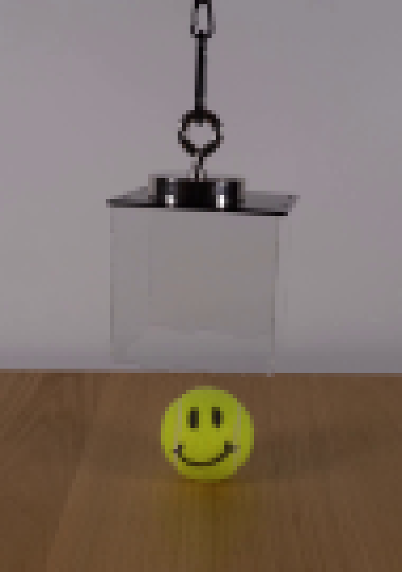
视觉工具实际返回图片 3
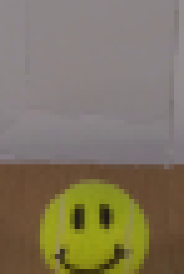
视觉工具实际返回图片 4
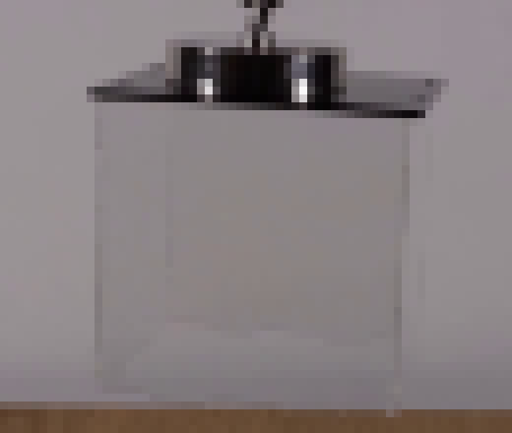
视觉工具实际返回图片 5
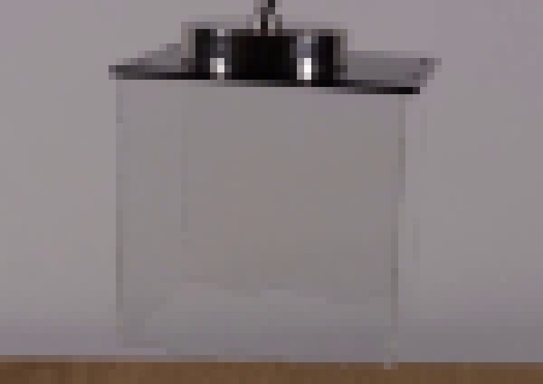
视觉工具实际返回图片 6
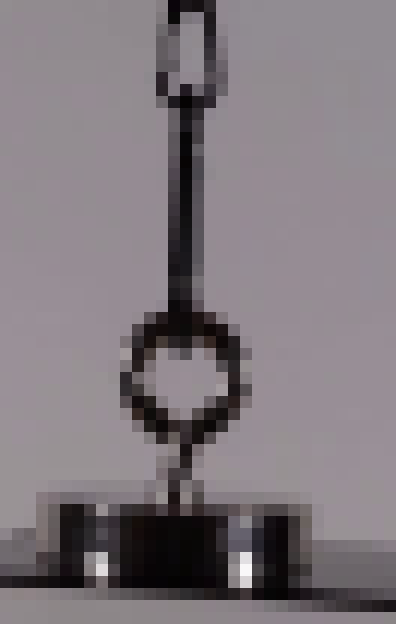
视觉工具实际返回图片 7
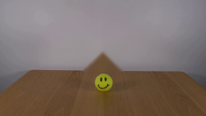
视觉工具实际返回图片 8
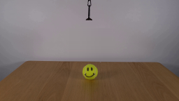
视觉工具实际返回图片 9
视觉工具实际返回图片 10
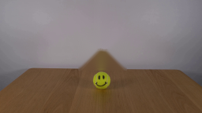
视觉工具实际返回图片 11
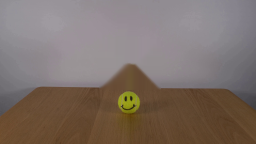
视觉工具实际返回图片 12
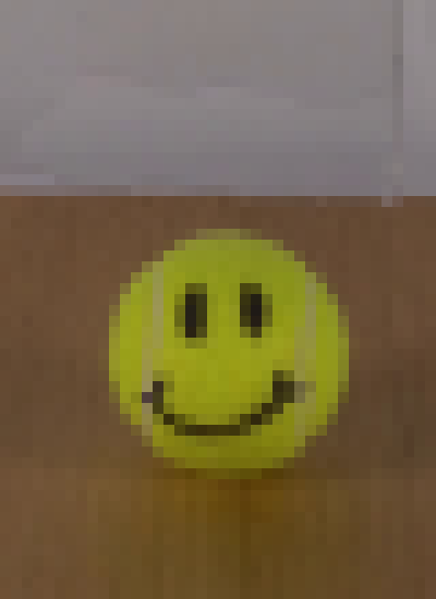
视觉工具实际返回图片 13
视觉工具实际返回图片 14

视觉工具实际返回图片 15
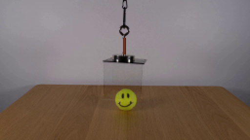
视觉工具实际返回图片 16
视觉工具实际返回图片 17
视觉工具实际返回图片 18

视觉工具实际返回图片 19
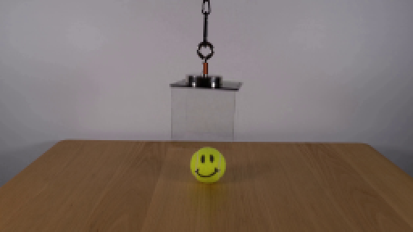
视觉工具实际返回图片 20
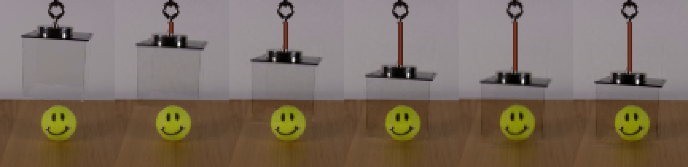
视觉工具实际返回图片 21
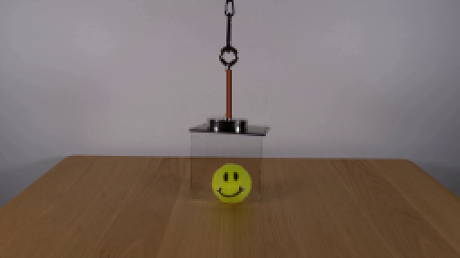
视觉工具实际返回图片 22

视觉工具实际返回图片 23

视觉工具实际返回图片 24
视觉工具实际返回图片 25
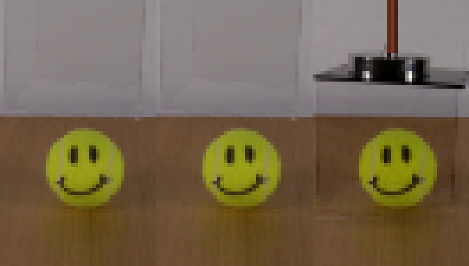
视觉工具实际返回图片 26
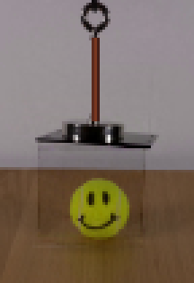
视觉工具实际返回图片 27
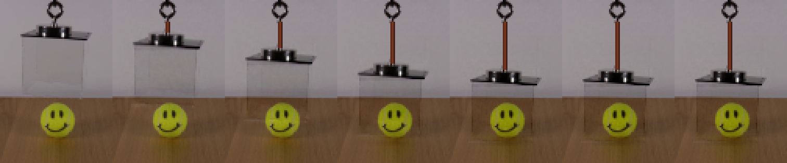
视觉工具实际返回图片 28
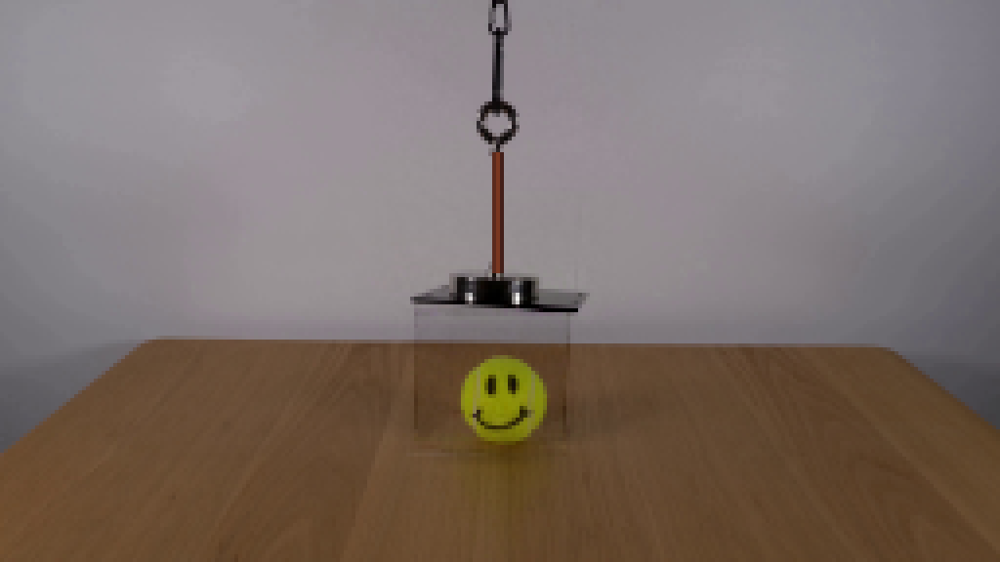
视觉工具实际返回图片 29

保存候选 4 份；完成命令 63 次；可验证图片返回 29 张。原始 API 响应与完整日志保留在本地。